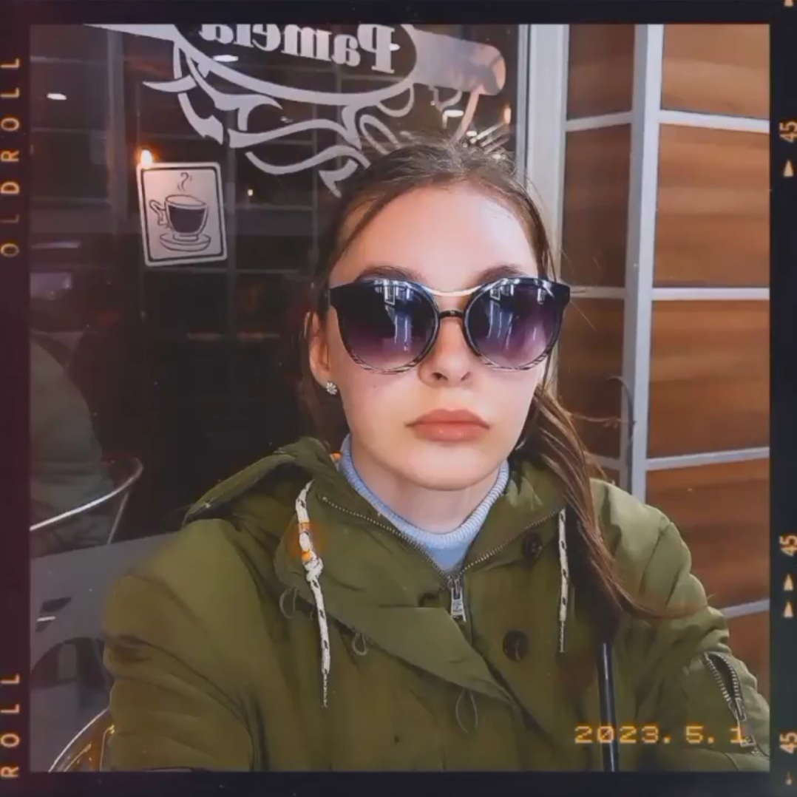

Mozart - Lacrimosa
- 
- Сашка Ендровска
- 20 години
- студент
- 216102
Листа од факти за мене:
→Јас сум голем обожавател на книги.
→Имам желба да научам голем број на јазици.
→Многу ја сакам и почитувам уметноста.
→Имам невозможна цел да знам сЕ.
→Лесно ја решавам рубиковата коцка.
→На секој излет, носам двоглед.
(Секогаш се исплатува)
Што правам да ги
постигнам моите цели:
→Го изучувам италијанскиот јазик.
→Учам програмски јазици.
→Медитирам.
→Секојдневно се среќавам со нови прашања.
→Одам на курсеви кои го привлекуваат
моето внимание.
Моментално сум студент на факултетот ФИНКИ во групата ПИТ. Завршив средно во СУГС Никола Карев како и курс на
академијата M3DS. Со тек на време успеав да се образовам во многу области, доволно да стекнам самодоверба
во моето знаење и своите способности. Јас сметам дека знаењето е најмоќното оружје.
Јас зборувам три јазици (македонски, англиски, српски) и изучувам италијански.
Знам да ги користам програмите Maya, Z-brush, Substance Painter, Marvelous Designer како и AdobePhotoshop.
Моментално на ФИНКИ ги изучувам програмските јазици C, C++, HTML, CSS итн. Исто така, заедно со овие јазици,
ги учам и JavaScript и CSS3, со цел, поубаво да ја разберам структурата на Веб страниците.
Себеси се сметам за личност која сака да ужива во животот. Ги почитувам убавините на природата како и уметничките креации на луѓето. Решив да споделам листа од мал број на моите омилени филмови, книги и песни.
Книги
- „Six of Crows“ - ја раскажува приказната за Каз Брекер, брилијантен, но безмилосен измамник со вешт екипаж од лути, крадци и шпиони на располагање.
- „Six Crimson Cranes“ - без пари, безгласна и сама, Шиори ги бара своите браќа и открива мрачен заговор за преземање на тронот.
- „Percy Jackson:The Lightning Thief“ - лесна фантазија за 12-годишно момче кое дознава дека неговиот вистински татко е Посејдон, грчкиот бог на морето. Перси тргнува да стане херој преземајќи потрага низ Соединетите Држави за да го најде влезот во Подземјето и да ја спречи војната меѓу боговите.
- „Metro 2033“ - Артјом, главниот јунак на нашата приказна и млад човек кој живее во VDNKh доби задача да мора да стигне и да го прикачи срцето на метрото, речиси митскиот „Полис“. Тој има задача со оваа работа да ги предупреди сите за страшната опасност што доаѓа за нив. Метро 2033 има песимистичко мислење за човештвото, прикажувајќи вид кој, и покрај крајот на светот, продолжува да го убива својот вид.
- „Circe“ - Протерана од нејзиниот татко на оддалечен остров како казна поради употребата на магии, се среќава со смртникот Одисеј, кој станува бродолом на нејзиниот остров.
Филмови
- „Indiana Jones“ - Професорот по археологија Индијана Џонс се осмелува да заплени библиски артефакт познат како Ковчегот на заветот. Додека го прави тоа, тој се бори против Рене и една трупа нацисти.
- „The Princess Bride“ - Авантура од бајките за една убава млада жена и нејзината единствена вистинска љубов. Мора да ја најде по долга разделба и да ја спаси. Тие мора да се борат со злата на митското кралство Флорин за повторно да се обединат едни со други.
- „Clueless“ - Шер е богата средношколка која учи да се справува со адолесценцијата и нејзините проблеми. Таа, исто така, му помага на новиот студент да добие популарност и во тој процес да ги открие сопствените чувства кон некого.
- „Atlantis: The Lost Empire“ - Младиот лингвист по име Мајло Тач се придружува на храбра група истражувачи да го пронајдат мистериозниот изгубен континент Атлантида.
- „Dirty Harry“ - Полицаецот Хари Калахан се обидува да пронајде психопатски убиец на покривот пред да умре една киднапирана девојка. Кога е пронајден, Хари ги злоупотребува граѓанските права на убиецот и го враќа на улица. Откако ќе биде ослободен, тој киднапира училишен автобус и Хари мора повторно да тргне по него. Единствениот начин да се запре овој злобен убиец е ладнокрвно.
- Bob Seger - The Famous Final Scene
- R.E.M. - Losing My Religion
- Led Zeppelin - All Of My Love
- Tame Impala - Eventually
- Blue Öyster Cult - (Don't Fear) The Reaper
Листа на песни кои моментално ги слушам.
Желба
Сонувам да живеам близу море. Да ги слушам брановите и да ја мирисам солта во воздухот. Се надевам дека еден ден ќе ми се исполни тој сон, да ја гледам бесконечноста на хоризонтот. Сакам да го пронајдам тоа што на секој човек му недостасува, мир.